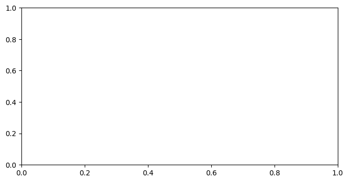

14. Pandas#
Pandas is a python package for importing, inspecting, cleaning, aggregating, transforming, and visualizing data. You import pandas as:
import pandas as pd
14.1. Pandas Dataframe#
The main new data type introduced in Pandas is the DataFrame. A DataFrame looks like a table or a spreadsheet.
Pandas also introduces the DataSeries, basically a DataFrame with a single column. Why make this special data type? Beats me. I try to avoid them.
14.2. Importing and Inspecting Data#
Most of the time, we’ll be using data that exist outside of Python, either data that somebody else has collected or data that we’ve collected and saved to some other kind of file (.csv, .json, etc). We’ll import data into the dataframe using:
df = pd.read_csv(data.csv)
Where data.csv could be a filepath on your computer or a url to a file that exists online. There are other commands that allow pandas to import a variety of data filetypes.
Once a file is imported, we can inspect the data using:
df.head(n)- Look at the first n rows (5 rows by default, if you omit n)df.tail(n)- Look at the last n rowsdf.describe()- Get information and statistics of the datadf.info()- Gets the data type and number of valid entries for each columndf.columns- Get a list of feature names
We’ll import and inspect the Marvel Cinematic Universe (MCU) Movies & Series dataset, compiled by Stephen Tracy and published on Kaggle: https://www.kaggle.com/datasets/stevetracy/marvel-cinematic-universe-mcu-movies-and-series
(I have a copy of this dataset in a Github repository)
import pandas as pd
import numpy as np
import matplotlib.pyplot as plt
mcu_df = pd.read_csv('https://raw.githubusercontent.com/GettysburgDataScience/datasets/refs/heads/main/mcu_data_apr_2024.csv')
mcu_df.head(3)
| movie_title | Type | mcu_phase_number | mcu_phase_text | release_date | release_year | rt_tomato_meter | rt_audience_score | imdb-rating | metacritic_metascore | metacritic_userscore | production_budget | domestic_box_office | international_box_office | worldwide_box_office | |
|---|---|---|---|---|---|---|---|---|---|---|---|---|---|---|---|
| 0 | Iron Man | Movie | 1.0 | MCU Phase 1 | 5/2/08 | 2008.0 | 94.0 | 91.0 | 7.9 | 79.0 | 8.6 | $140,000,000 | $319,034,126 | $266,762,121 | $585,796,247 |
| 1 | The Incredible Hulk | Movie | 1.0 | MCU Phase 1 | 6/13/08 | 2008.0 | 67.0 | 70.0 | 6.6 | 61.0 | 6.8 | $140,000,000 | $134,806,913 | $128,620,638 | $263,427,551 |
| 2 | Iron Man 2 | Movie | 1.0 | MCU Phase 1 | 5/7/10 | 2010.0 | 72.0 | 71.0 | 6.9 | 57.0 | 6.4 | $200,000,000 | $312,433,331 | $311,500,000 | $623,933,331 |
mcu_df.tail(4)
| movie_title | Type | mcu_phase_number | mcu_phase_text | release_date | release_year | rt_tomato_meter | rt_audience_score | imdb-rating | metacritic_metascore | metacritic_userscore | production_budget | domestic_box_office | international_box_office | worldwide_box_office | |
|---|---|---|---|---|---|---|---|---|---|---|---|---|---|---|---|
| 41 | The Marvels | Movie | 5.0 | MCU Phase 5 | 11/10/23 | 2023.0 | 62.0 | 82.0 | 5.6 | 50.0 | 3.8 | $270,000,000 | $84,500,223 | $121,612,709 | $206,112,932 |
| 42 | Echo | TV Show | 5.0 | MCU Phase 5 | 1/9/24 | 2024.0 | 71.0 | 61.0 | 6.0 | 62.0 | 5.2 | $40,000,000 | - | - | - |
| 43 | NaN | NaN | NaN | NaN | NaN | NaN | NaN | NaN | NaN | NaN | NaN | NaN | NaN | NaN | NaN |
| 44 | NaN | NaN | NaN | NaN | NaN | NaN | NaN | NaN | NaN | NaN | NaN | $8,157,000,000 | $11,799,499,952 | $18,027,089,947 | $29,826,145,377 |
mcu_df.info()
<class 'pandas.core.frame.DataFrame'>
RangeIndex: 45 entries, 0 to 44
Data columns (total 15 columns):
# Column Non-Null Count Dtype
--- ------ -------------- -----
0 movie_title 43 non-null object
1 Type 43 non-null object
2 mcu_phase_number 43 non-null float64
3 mcu_phase_text 43 non-null object
4 release_date 43 non-null object
5 release_year 43 non-null float64
6 rt_tomato_meter 43 non-null float64
7 rt_audience_score 43 non-null float64
8 imdb-rating 43 non-null float64
9 metacritic_metascore 43 non-null float64
10 metacritic_userscore 43 non-null float64
11 production_budget 44 non-null object
12 domestic_box_office 44 non-null object
13 international_box_office 44 non-null object
14 worldwide_box_office 44 non-null object
dtypes: float64(7), object(8)
memory usage: 5.4+ KB
mcu_df.describe()
| mcu_phase_number | release_year | rt_tomato_meter | rt_audience_score | imdb-rating | metacritic_metascore | metacritic_userscore | |
|---|---|---|---|---|---|---|---|
| count | 43.000000 | 43.000000 | 43.000000 | 43.000000 | 43.000000 | 43.000000 | 43.000000 |
| mean | 3.162791 | 2018.023256 | 81.511628 | 81.906977 | 7.158140 | 67.093023 | 6.593023 |
| std | 1.233080 | 4.431964 | 13.017154 | 13.876692 | 0.753794 | 8.242786 | 1.493381 |
| min | 1.000000 | 2008.000000 | 46.000000 | 32.000000 | 5.300000 | 48.000000 | 2.700000 |
| 25% | 2.000000 | 2015.000000 | 76.500000 | 78.000000 | 6.750000 | 62.500000 | 5.950000 |
| 50% | 3.000000 | 2019.000000 | 85.000000 | 86.000000 | 7.300000 | 68.000000 | 6.900000 |
| 75% | 4.000000 | 2021.500000 | 92.000000 | 91.000000 | 7.750000 | 72.000000 | 7.750000 |
| max | 5.000000 | 2024.000000 | 98.000000 | 98.000000 | 8.400000 | 88.000000 | 8.600000 |
The numbers in the left-most column (un-labeled) are the row indices. Sometimes these will not be sequential numbers.
The labels across the top are the column names. When selecting a column, the name must match EXACTLY.
14.3. Selecting and Filtering Data#
14.3.1. Selecting a Column or Columns#
You can select a column or set of columns using a list of names. This is the similar to how we select keys in a dictionary.
columns_to_view = ['movie_title', 'release_year']
mcu_df[columns_to_view]
| movie_title | release_year | |
|---|---|---|
| 0 | Iron Man | 2008.0 |
| 1 | The Incredible Hulk | 2008.0 |
| 2 | Iron Man 2 | 2010.0 |
| 3 | Thor | 2011.0 |
| 4 | Captain America: The First Avenger | 2011.0 |
| 5 | The Avengers | 2012.0 |
| 6 | Iron Man 3 | 2013.0 |
| 7 | Thor: The Dark World | 2013.0 |
| 8 | Captain America: The Winter Soldier | 2014.0 |
| 9 | Guardians of the Galaxy | 2014.0 |
| 10 | Avengers: Age of Ultron | 2015.0 |
| 11 | Ant-Man | 2015.0 |
| 12 | Captain America: Civil War | 2016.0 |
| 13 | Doctor Strange | 2016.0 |
| 14 | Guardians of the Galaxy Vol. 2 | 2017.0 |
| 15 | Spider-Man: Homecoming | 2017.0 |
| 16 | Thor: Ragnarok | 2017.0 |
| 17 | Black Panther | 2018.0 |
| 18 | Avengers: Infinity War | 2018.0 |
| 19 | Ant-Man and the Wasp | 2018.0 |
| 20 | Captain Marvel | 2019.0 |
| 21 | Avengers: Endgame | 2019.0 |
| 22 | Spider-Man: Far From Home | 2019.0 |
| 23 | WandaVision | 2021.0 |
| 24 | The Falcon and the Winter Soldier | 2021.0 |
| 25 | Loki | 2021.0 |
| 26 | Black Widow | 2021.0 |
| 27 | What If…? | 2021.0 |
| 28 | Shang-Chi and the Legend of the Ten Rings | 2021.0 |
| 29 | Eternals | 2021.0 |
| 30 | Hawkeye | 2021.0 |
| 31 | Spider-Man: No Way Home | 2021.0 |
| 32 | Moon Knight | 2022.0 |
| 33 | Doctor Strange: Multiverse of Madness | 2022.0 |
| 34 | Ms. Marvel | 2022.0 |
| 35 | Thor: Love and Thunder | 2022.0 |
| 36 | She-Hulk | 2022.0 |
| 37 | Black Panther: Wakanda Forever | 2022.0 |
| 38 | Ant-Man and the Wasp: Quantumania | 2023.0 |
| 39 | Guardians of the Galaxy Vol. 3 | 2023.0 |
| 40 | Secret Invasion | 2023.0 |
| 41 | The Marvels | 2023.0 |
| 42 | Echo | 2024.0 |
| 43 | NaN | NaN |
| 44 | NaN | NaN |
14.3.2. Filtering Rows using .query#
We can think of each ROW of a dataframe as an entry. We can filter the dataframe to keep only entries with specific properties using .query().
.query() takes a string as an argument. The string should represent a Boolean statement using column names as ‘variables’.
For example:
df.query('col1 > 4')
Let’s filter mcu_df to get the following:
Movies with length less than 2 hrs.
The Guardians of the Galaxy movies
Movies liked more by the general audience than by the critics.
mcu_post_covid = mcu_df.query('release_year >= 2021 and Type == "Movie"')
# Find all movies critics prefered over audiences
mcu_df.query('rt_audience_score < rt_tomato_meter')
iron = mcu_df.query('movie_title.str.startswith("Iron Man")')
capt = mcu_df.query('movie_title.str.startswith("Captain America")')
spider = mcu_df.query('movie_title.str.startswith("Spider")')
avengers = mcu_df.query('movie_title.str.startswith("Avengers")')
---------------------------------------------------------------------------
ValueError Traceback (most recent call last)
File ~/.pyenv/versions/3.13.1/envs/datascience/lib/python3.13/site-packages/pandas/core/frame.py:4837, in DataFrame.query(self, expr, inplace, **kwargs)
4836 try:
-> 4837 result = self.loc[res]
4838 except ValueError:
4839 # when res is multi-dimensional loc raises, but this is sometimes a
4840 # valid query
File ~/.pyenv/versions/3.13.1/envs/datascience/lib/python3.13/site-packages/pandas/core/indexing.py:1192, in _LocationIndexer.__getitem__(self, key)
1191 maybe_callable = self._check_deprecated_callable_usage(key, maybe_callable)
-> 1192 return self._getitem_axis(maybe_callable, axis=axis)
File ~/.pyenv/versions/3.13.1/envs/datascience/lib/python3.13/site-packages/pandas/core/indexing.py:1413, in _LocIndexer._getitem_axis(self, key, axis)
1412 return self._get_slice_axis(key, axis=axis)
-> 1413 elif com.is_bool_indexer(key):
1414 return self._getbool_axis(key, axis=axis)
File ~/.pyenv/versions/3.13.1/envs/datascience/lib/python3.13/site-packages/pandas/core/common.py:136, in is_bool_indexer(key)
133 if lib.is_bool_array(key_array, skipna=True):
134 # Don't raise on e.g. ["A", "B", np.nan], see
135 # test_loc_getitem_list_of_labels_categoricalindex_with_na
--> 136 raise ValueError(na_msg)
137 return False
ValueError: Cannot mask with non-boolean array containing NA / NaN values
During handling of the above exception, another exception occurred:
ValueError Traceback (most recent call last)
Cell In[9], line 4
1 # Find all movies critics prefered over audiences
2 mcu_df.query('rt_audience_score < rt_tomato_meter')
----> 4 iron = mcu_df.query('movie_title.str.startswith("Iron Man")')
5 capt = mcu_df.query('movie_title.str.startswith("Captain America")')
6 spider = mcu_df.query('movie_title.str.startswith("Spider")')
File ~/.pyenv/versions/3.13.1/envs/datascience/lib/python3.13/site-packages/pandas/core/frame.py:4841, in DataFrame.query(self, expr, inplace, **kwargs)
4837 result = self.loc[res]
4838 except ValueError:
4839 # when res is multi-dimensional loc raises, but this is sometimes a
4840 # valid query
-> 4841 result = self[res]
4843 if inplace:
4844 self._update_inplace(result)
File ~/.pyenv/versions/3.13.1/envs/datascience/lib/python3.13/site-packages/pandas/core/frame.py:4103, in DataFrame.__getitem__(self, key)
4100 return self.where(key)
4102 # Do we have a (boolean) 1d indexer?
-> 4103 if com.is_bool_indexer(key):
4104 return self._getitem_bool_array(key)
4106 # We are left with two options: a single key, and a collection of keys,
4107 # We interpret tuples as collections only for non-MultiIndex
File ~/.pyenv/versions/3.13.1/envs/datascience/lib/python3.13/site-packages/pandas/core/common.py:136, in is_bool_indexer(key)
132 na_msg = "Cannot mask with non-boolean array containing NA / NaN values"
133 if lib.is_bool_array(key_array, skipna=True):
134 # Don't raise on e.g. ["A", "B", np.nan], see
135 # test_loc_getitem_list_of_labels_categoricalindex_with_na
--> 136 raise ValueError(na_msg)
137 return False
138 return True
ValueError: Cannot mask with non-boolean array containing NA / NaN values
iron_wwbo = iron['worldwide'].sum()
capt_wwbo = capt['worldwide'].sum()
spider_wwbo = spider['worldwide'].sum()
avengers_wwbo = avengers['worldwide'].sum()
---------------------------------------------------------------------------
NameError Traceback (most recent call last)
Cell In[10], line 1
----> 1 iron_wwbo = iron['worldwide'].sum()
2 capt_wwbo = capt['worldwide'].sum()
3 spider_wwbo = spider['worldwide'].sum()
NameError: name 'iron' is not defined
fig, ax = plt.subplots(1, 1, figsize = (8,4))
ax.barh(y = ['Iron Man', 'Captain America', 'Spider-Man', 'Avengers'],
width = [iron_wwbo, capt_wwbo, spider_wwbo, avengers_wwbo],
color = ['r', 'b', 'g', 'y']
)
ax.set(
title = 'Worldwide Box Office Draw of MCU Movies',
xlabel = 'Earnings ($)',
facecolor = '#aaaaaa'
)
plt.show()
---------------------------------------------------------------------------
NameError Traceback (most recent call last)
Cell In[11], line 4
1 fig, ax = plt.subplots(1, 1, figsize = (8,4))
3 ax.barh(y = ['Iron Man', 'Captain America', 'Spider-Man', 'Avengers'],
----> 4 width = [iron_wwbo, capt_wwbo, spider_wwbo, avengers_wwbo],
5 color = ['r', 'b', 'g', 'y']
6 )
8 ax.set(
9 title = 'Worldwide Box Office Draw of MCU Movies',
10 xlabel = 'Earnings ($)',
11 facecolor = '#aaaaaa'
12 )
14 plt.show()
NameError: name 'iron_wwbo' is not defined

14.3.3. Slicing using .loc#
.iloc takes two positional arguments, a row index (or list of) and a column name (or list of)
df.loc[row_index, column_name]
14.3.4. Slicing using .iloc#
.iloc treats the DataFrame as if it were a numpy array. It only accepts numeric arguments, completely ignoring the row indices and column names. For example:
df.iloc[:2, 0]
Will return the first two rows (regardless of input number) of the zero-th (first) column (regardless of name).
Let’s see an example when the indices are not ordered.
mcu_post_covid.loc[37, 'movie_title']
'Black Panther: Wakanda Forever'
mcu_post_covid.iloc[6, 0]
'Black Panther: Wakanda Forever'
14.4. Data Cleaning#
The data have three main issues:
The last two rows are missing all data. Easy fix.
Some of the headings have leading and trailing spaces (e.g. ‘ worldwide_box_office ‘). Annoying.
All the budget and revenue columns list the dollar amounts as strings with $ and commas. Annnoyyyyying.
For now, I’m just cleaning the data for you. We’ll cover these tools later.
14.4.1. Dropping bad data#
Data can be ‘bad’ for numerous reasons, but most immediately obvious are missing data. We drop missing data with df.dropna (dropna documentation)
mcu_df.tail()
| movie_title | Type | mcu_phase_number | mcu_phase_text | release_date | release_year | rt_tomato_meter | rt_audience_score | imdb-rating | metacritic_metascore | metacritic_userscore | production_budget | domestic_box_office | international_box_office | worldwide_box_office | |
|---|---|---|---|---|---|---|---|---|---|---|---|---|---|---|---|
| 40 | Secret Invasion | TV Show | 5.0 | MCU Phase 5 | 6/21/23 | 2023.0 | 53.0 | 46.0 | 5.9 | 63.0 | 3.5 | $211,000,000 | - | - | - |
| 41 | The Marvels | Movie | 5.0 | MCU Phase 5 | 11/10/23 | 2023.0 | 62.0 | 82.0 | 5.6 | 50.0 | 3.8 | $270,000,000 | $84,500,223 | $121,612,709 | $206,112,932 |
| 42 | Echo | TV Show | 5.0 | MCU Phase 5 | 1/9/24 | 2024.0 | 71.0 | 61.0 | 6.0 | 62.0 | 5.2 | $40,000,000 | - | - | - |
| 43 | NaN | NaN | NaN | NaN | NaN | NaN | NaN | NaN | NaN | NaN | NaN | NaN | NaN | NaN | NaN |
| 44 | NaN | NaN | NaN | NaN | NaN | NaN | NaN | NaN | NaN | NaN | NaN | $8,157,000,000 | $11,799,499,952 | $18,027,089,947 | $29,826,145,377 |
mcu_df.dropna(axis=0, inplace=True)
mcu_df.tail()
| movie_title | Type | mcu_phase_number | mcu_phase_text | release_date | release_year | rt_tomato_meter | rt_audience_score | imdb-rating | metacritic_metascore | metacritic_userscore | production_budget | domestic_box_office | international_box_office | worldwide_box_office | |
|---|---|---|---|---|---|---|---|---|---|---|---|---|---|---|---|
| 38 | Ant-Man and the Wasp: Quantumania | Movie | 5.0 | MCU Phase 5 | 2/17/23 | 2023.0 | 46.0 | 82.0 | 6.1 | 48.0 | 5.5 | $200,000,000 | $214,504,909 | $261,566,271 | $476,071,180 |
| 39 | Guardians of the Galaxy Vol. 3 | Movie | 5.0 | MCU Phase 5 | 5/5/23 | 2023.0 | 82.0 | 94.0 | 7.9 | 64.0 | 7.9 | $250,000,000 | $358,995,815 | $486,559,962 | $845,555,777 |
| 40 | Secret Invasion | TV Show | 5.0 | MCU Phase 5 | 6/21/23 | 2023.0 | 53.0 | 46.0 | 5.9 | 63.0 | 3.5 | $211,000,000 | - | - | - |
| 41 | The Marvels | Movie | 5.0 | MCU Phase 5 | 11/10/23 | 2023.0 | 62.0 | 82.0 | 5.6 | 50.0 | 3.8 | $270,000,000 | $84,500,223 | $121,612,709 | $206,112,932 |
| 42 | Echo | TV Show | 5.0 | MCU Phase 5 | 1/9/24 | 2024.0 | 71.0 | 61.0 | 6.0 | 62.0 | 5.2 | $40,000,000 | - | - | - |
14.4.2. Renaming Columns#
We can rename columns using the function .rename() which takes as input a dictionary. The keys of the dictionary are the current column headers and the values are the replacement headers.
mcu_df.columns
Index(['movie_title', 'Type', 'mcu_phase_number', 'mcu_phase_text',
'release_date', 'release_year', 'rt_tomato_meter', 'rt_audience_score',
'imdb-rating', 'metacritic_metascore', 'metacritic_userscore',
' production_budget ', ' domestic_box_office ',
' international_box_office ', ' worldwide_box_office '],
dtype='object')
rename_dict = {
' production_budget ' : 'production',
' domestic_box_office ' : 'domestic',
' international_box_office ' : 'international',
' worldwide_box_office ' : 'worldwide'
}
mcu_df.rename(columns = rename_dict, inplace = True)
mcu_df['domestic'].unique()
array([' $319,034,126 ', ' $134,806,913 ', ' $312,433,331 ',
' $181,030,624 ', ' $176,654,505 ', ' $623,357,910 ',
' $409,013,994 ', ' $206,362,140 ', ' $259,766,572 ',
' $333,176,600 ', ' $459,005,868 ', ' $180,202,163 ',
' $408,084,349 ', ' $232,641,920 ', ' $389,813,101 ',
' $334,201,140 ', ' $315,058,289 ', ' $700,059,566 ',
' $678,815,482 ', ' $216,648,740 ', ' $426,829,839 ',
' $858,372,000 ', ' $390,532,085 ', ' - ', ' $183,651,655 ',
' $224,543,292 ', ' $164,870,234 ', ' $814,115,070 ',
' $411,331,607 ', ' $343,256,830 ', ' $453,829,060 ',
' $214,504,909 ', ' $358,995,815 ', ' $84,500,223 '], dtype=object)
mcu_df.replace(' - ', None, inplace = True)
### Applying a Function to a Column
def convert_money(x):
return x.str.replace('$', '').str.replace(',','').astype(float, errors = 'ignore')
money_columns = ['production', 'domestic',
'international', 'worldwide']
mcu_df[money_columns] = mcu_df[money_columns].apply(convert_money)
mcu_df.head()
| movie_title | Type | mcu_phase_number | mcu_phase_text | release_date | release_year | rt_tomato_meter | rt_audience_score | imdb-rating | metacritic_metascore | metacritic_userscore | production | domestic | international | worldwide | |
|---|---|---|---|---|---|---|---|---|---|---|---|---|---|---|---|
| 0 | Iron Man | Movie | 1.0 | MCU Phase 1 | 5/2/08 | 2008.0 | 94.0 | 91.0 | 7.9 | 79.0 | 8.6 | 140000000.0 | 319034126.0 | 266762121.0 | 585796247.0 |
| 1 | The Incredible Hulk | Movie | 1.0 | MCU Phase 1 | 6/13/08 | 2008.0 | 67.0 | 70.0 | 6.6 | 61.0 | 6.8 | 140000000.0 | 134806913.0 | 128620638.0 | 263427551.0 |
| 2 | Iron Man 2 | Movie | 1.0 | MCU Phase 1 | 5/7/10 | 2010.0 | 72.0 | 71.0 | 6.9 | 57.0 | 6.4 | 200000000.0 | 312433331.0 | 311500000.0 | 623933331.0 |
| 3 | Thor | Movie | 1.0 | MCU Phase 1 | 5/6/11 | 2011.0 | 77.0 | 76.0 | 7.0 | 57.0 | 7.0 | 150000000.0 | 181030624.0 | 268295994.0 | 449326618.0 |
| 4 | Captain America: The First Avenger | Movie | 1.0 | MCU Phase 1 | 7/22/11 | 2011.0 | 79.0 | 75.0 | 6.9 | 66.0 | 6.8 | 140000000.0 | 176654505.0 | 193915269.0 | 370569774.0 |
mcu_df['profit'] = mcu_df['worldwide'] - mcu_df['production']
mcu_df.head(2)
| movie_title | Type | mcu_phase_number | mcu_phase_text | release_date | release_year | rt_tomato_meter | rt_audience_score | imdb-rating | metacritic_metascore | metacritic_userscore | production | domestic | international | worldwide | profit | |
|---|---|---|---|---|---|---|---|---|---|---|---|---|---|---|---|---|
| 0 | Iron Man | Movie | 1.0 | MCU Phase 1 | 5/2/08 | 2008.0 | 94.0 | 91.0 | 7.9 | 79.0 | 8.6 | 140000000.0 | 319034126.0 | 266762121.0 | 585796247.0 | 445796247.0 |
| 1 | The Incredible Hulk | Movie | 1.0 | MCU Phase 1 | 6/13/08 | 2008.0 | 67.0 | 70.0 | 6.6 | 61.0 | 6.8 | 140000000.0 | 134806913.0 | 128620638.0 | 263427551.0 | 123427551.0 |
14.4.3. Adding a column#
Just as in dictionaries, you can add a calculated column as you go.
14.5. Calculations on Columns#
When extracting a column, you can use numpy functions to get different measures of those data:
.mean().std().min().max().sum().unique()
14.6. Selecting Data#
14.6.1. Inspection#
What movies/tv shows are on the list?
What are the statistics of the numeric columns?
Describe creates another dataframe and we can save this as a variable and interact with it.
# a new column indicating whether viewers or critics liked the movie more
mcu_df['audience_vs_critic'] = mcu_df['rt_audience_score'] - mcu_df['rt_tomato_meter']
mcu_df.head()
| movie_title | Type | mcu_phase_number | mcu_phase_text | release_date | release_year | rt_tomato_meter | rt_audience_score | imdb-rating | metacritic_metascore | metacritic_userscore | production | domestic | international | worldwide | profit | audience_vs_critic | |
|---|---|---|---|---|---|---|---|---|---|---|---|---|---|---|---|---|---|
| 0 | Iron Man | Movie | 1.0 | MCU Phase 1 | 5/2/08 | 2008.0 | 94.0 | 91.0 | 7.9 | 79.0 | 8.6 | 140000000.0 | 319034126.0 | 266762121.0 | 585796247.0 | 445796247.0 | -3.0 |
| 1 | The Incredible Hulk | Movie | 1.0 | MCU Phase 1 | 6/13/08 | 2008.0 | 67.0 | 70.0 | 6.6 | 61.0 | 6.8 | 140000000.0 | 134806913.0 | 128620638.0 | 263427551.0 | 123427551.0 | 3.0 |
| 2 | Iron Man 2 | Movie | 1.0 | MCU Phase 1 | 5/7/10 | 2010.0 | 72.0 | 71.0 | 6.9 | 57.0 | 6.4 | 200000000.0 | 312433331.0 | 311500000.0 | 623933331.0 | 423933331.0 | -1.0 |
| 3 | Thor | Movie | 1.0 | MCU Phase 1 | 5/6/11 | 2011.0 | 77.0 | 76.0 | 7.0 | 57.0 | 7.0 | 150000000.0 | 181030624.0 | 268295994.0 | 449326618.0 | 299326618.0 | -1.0 |
| 4 | Captain America: The First Avenger | Movie | 1.0 | MCU Phase 1 | 7/22/11 | 2011.0 | 79.0 | 75.0 | 6.9 | 66.0 | 6.8 | 140000000.0 | 176654505.0 | 193915269.0 | 370569774.0 | 230569774.0 | -4.0 |
14.7. Practice Problems#
Which movies made over $500,000,000 domestic box office? Provide the title, release_year, and domestic_box_office.
Which movies were liked by audiences more than by the critics? Provide all the info.
Find all the movies with Captain America in the title and tell me their metacritic scores.
# Which movies made over $500,000,000 domestic box office? Provide the title, release_year, and domestic_box_office
# Which movies were liked by audiences more than by the critics? Provide all the info.
mcu_df.query('rt_audience_score>rt_tomato_meter')
| movie_title | Type | mcu_phase_number | mcu_phase_text | release_date | release_year | rt_tomato_meter | rt_audience_score | imdb-rating | metacritic_metascore | metacritic_userscore | production | domestic | international | worldwide | profit | audience_vs_critic | |
|---|---|---|---|---|---|---|---|---|---|---|---|---|---|---|---|---|---|
| 1 | The Incredible Hulk | Movie | 1.0 | MCU Phase 1 | 6/13/08 | 2008.0 | 67.0 | 70.0 | 6.6 | 61.0 | 6.8 | 140000000.0 | 134806913.0 | 1.286206e+08 | 2.634276e+08 | 1.234276e+08 | 3.0 |
| 7 | Thor: The Dark World | Movie | 2.0 | MCU Phase 2 | 11/8/13 | 2013.0 | 66.0 | 75.0 | 6.8 | 54.0 | 7.0 | 170000000.0 | 206362140.0 | 4.384210e+08 | 6.447831e+08 | 4.747831e+08 | 9.0 |
| 8 | Captain America: The Winter Soldier | Movie | 2.0 | MCU Phase 2 | 4/4/14 | 2014.0 | 90.0 | 92.0 | 7.7 | 70.0 | 8.3 | 170000000.0 | 259766572.0 | 4.546549e+08 | 7.144215e+08 | 5.444215e+08 | 2.0 |
| 10 | Avengers: Age of Ultron | Movie | 2.0 | MCU Phase 2 | 5/1/15 | 2015.0 | 76.0 | 83.0 | 7.3 | 66.0 | 7.1 | 250000000.0 | 459005868.0 | 9.437860e+08 | 1.402792e+09 | 1.152792e+09 | 7.0 |
| 11 | Ant-Man | Movie | 2.0 | MCU Phase 2 | 7/17/15 | 2015.0 | 83.0 | 85.0 | 7.2 | 64.0 | 7.4 | 130000000.0 | 180202163.0 | 3.391098e+08 | 5.193120e+08 | 3.893120e+08 | 2.0 |
| 14 | Guardians of the Galaxy Vol. 2 | Movie | 3.0 | MCU Phase 3 | 5/5/17 | 2017.0 | 85.0 | 87.0 | 7.6 | 67.0 | 7.8 | 200000000.0 | 389813101.0 | 4.739000e+08 | 8.637561e+08 | 6.637561e+08 | 2.0 |
| 18 | Avengers: Infinity War | Movie | 3.0 | MCU Phase 3 | 4/27/18 | 2018.0 | 85.0 | 91.0 | 8.4 | 68.0 | 8.5 | 300000000.0 | 678815482.0 | 1.369544e+09 | 2.048360e+09 | 1.748360e+09 | 6.0 |
| 22 | Spider-Man: Far From Home | Movie | 3.0 | MCU Phase 3 | 7/2/19 | 2019.0 | 90.0 | 95.0 | 7.4 | 69.0 | 7.5 | 160000000.0 | 390532085.0 | 7.412200e+08 | 1.131752e+09 | 9.717521e+08 | 5.0 |
| 26 | Black Widow | Movie | 4.0 | MCU Phase 4 | 7/9/21 | 2021.0 | 79.0 | 91.0 | 6.7 | 68.0 | 6.0 | 288000000.0 | 183651655.0 | 1.961000e+08 | 3.797517e+08 | 9.175166e+07 | 12.0 |
| 28 | Shang-Chi and the Legend of the Ten Rings | Movie | 4.0 | MCU Phase 4 | 9/3/21 | 2021.0 | 91.0 | 98.0 | 7.4 | 71.0 | 7.0 | 150000000.0 | 224543292.0 | 2.077000e+08 | 4.322433e+08 | 2.822433e+08 | 7.0 |
| 29 | Eternals | Movie | 4.0 | MCU Phase 4 | 11/5/21 | 2021.0 | 47.0 | 78.0 | 6.3 | 52.0 | 6.1 | 236000000.0 | 164870234.0 | 2.371947e+08 | 4.020649e+08 | 1.660649e+08 | 31.0 |
| 31 | Spider-Man: No Way Home | Movie | 4.0 | MCU Phase 4 | 12/17/21 | 2021.0 | 93.0 | 98.0 | 8.2 | 71.0 | 8.5 | 200000000.0 | 814115070.0 | 1.107732e+09 | 1.921847e+09 | 1.721847e+09 | 5.0 |
| 32 | Moon Knight | TV Show | 4.0 | MCU Phase 4 | 3/30/22 | 2022.0 | 86.0 | 89.0 | 7.3 | 69.0 | 6.9 | 148000000.0 | NaN | NaN | NaN | NaN | 3.0 |
| 33 | Doctor Strange: Multiverse of Madness | Movie | 4.0 | MCU Phase 4 | 5/6/22 | 2022.0 | 73.0 | 85.0 | 6.9 | 60.0 | 5.9 | 294000000.0 | 411331607.0 | 5.444442e+08 | 9.557758e+08 | 6.617758e+08 | 12.0 |
| 35 | Thor: Love and Thunder | Movie | 4.0 | MCU Phase 4 | 7/8/22 | 2022.0 | 63.0 | 76.0 | 6.2 | 57.0 | 4.8 | 250000000.0 | 343256830.0 | 4.176713e+08 | 7.609281e+08 | 5.109281e+08 | 13.0 |
| 37 | Black Panther: Wakanda Forever | Movie | 4.0 | MCU Phase 4 | 11/11/22 | 2022.0 | 83.0 | 94.0 | 6.7 | 67.0 | 5.2 | 200000000.0 | 453829060.0 | 4.053798e+08 | 8.592088e+08 | 6.592088e+08 | 11.0 |
| 38 | Ant-Man and the Wasp: Quantumania | Movie | 5.0 | MCU Phase 5 | 2/17/23 | 2023.0 | 46.0 | 82.0 | 6.1 | 48.0 | 5.5 | 200000000.0 | 214504909.0 | 2.615663e+08 | 4.760712e+08 | 2.760712e+08 | 36.0 |
| 39 | Guardians of the Galaxy Vol. 3 | Movie | 5.0 | MCU Phase 5 | 5/5/23 | 2023.0 | 82.0 | 94.0 | 7.9 | 64.0 | 7.9 | 250000000.0 | 358995815.0 | 4.865600e+08 | 8.455558e+08 | 5.955558e+08 | 12.0 |
| 41 | The Marvels | Movie | 5.0 | MCU Phase 5 | 11/10/23 | 2023.0 | 62.0 | 82.0 | 5.6 | 50.0 | 3.8 | 270000000.0 | 84500223.0 | 1.216127e+08 | 2.061129e+08 | -6.388707e+07 | 20.0 |
# Find all the movies with Captain America in the title and tell me their metacritic scores.
# Notice, to use string functions, you have to prepend the function with str.